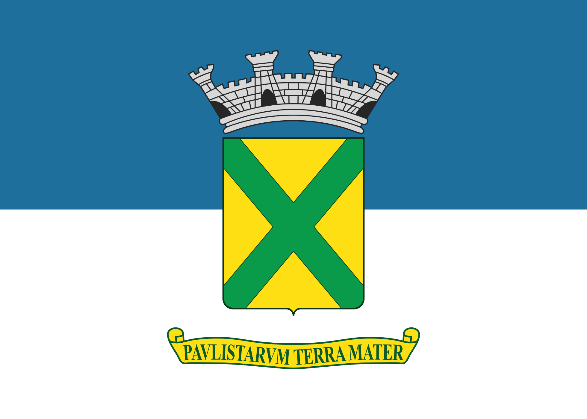

Bandeira da cidade de Santo André

Santo André, livre terra querida,
Forja ardente de amor e trabalho,
Em teu solo semeias a vida,
Em teus lares ha pão e agasalho.
Salve, salve, torrão Andreense
Gigantesco viveiro industrial!
Teu formoso destino pertence
Aos que lutam por um ideal!
Três figuras de heróis bandeirantes
Isabel, 0 Cacique e 0 Reinol
Constituíram Os troncos gigantes
Das famílias paulistas de escol.
Salve, salve, torrão Andreense
Gigantesco viveiro industrial!
Teu formoso destino pertence
Aos que lutam por um ideal!
Se tu foste, no início, um castigo
Hoje es benção dos céus sobre nos.
Santo André , 0 teu nome bendigo,
Berço e tumba de nossos avós.
Salve, salve, torrão Andreense
Gigantesco viveiro industrial!
Teu formoso destino pertence
Aos que lutam por um ideal!
Eia, pois, a caminho da glória,
Santo André do herói quinhentista!
Tu serás para sempre na história
Marco zero da história Paulista!
Salve, salve, torrão Andreense
Gigantesco viveiro industrial!
Teu formoso destino pertence
Aos que lutam por um ideal!